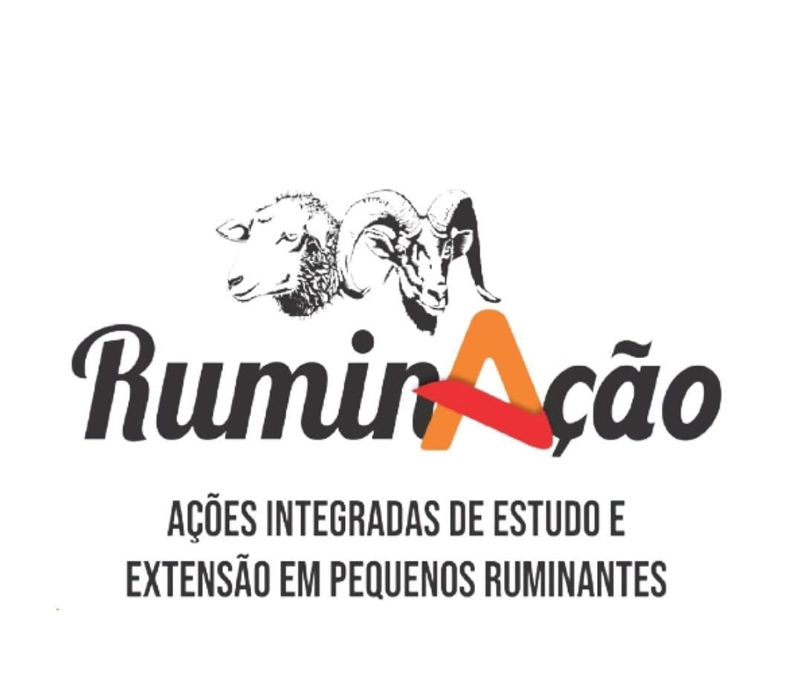

Dimensionamento de Silos
Descubra o tamanho e a quantidade de forragem do seu silo

Como utilizar o site?
1. Caso já tenha um silo, clique no botão verde
2. Caso não tenha, clique no botão vermelho
1. Caso já tenha um silo, clique no botão verde
2. Caso não tenha, clique no botão vermelho